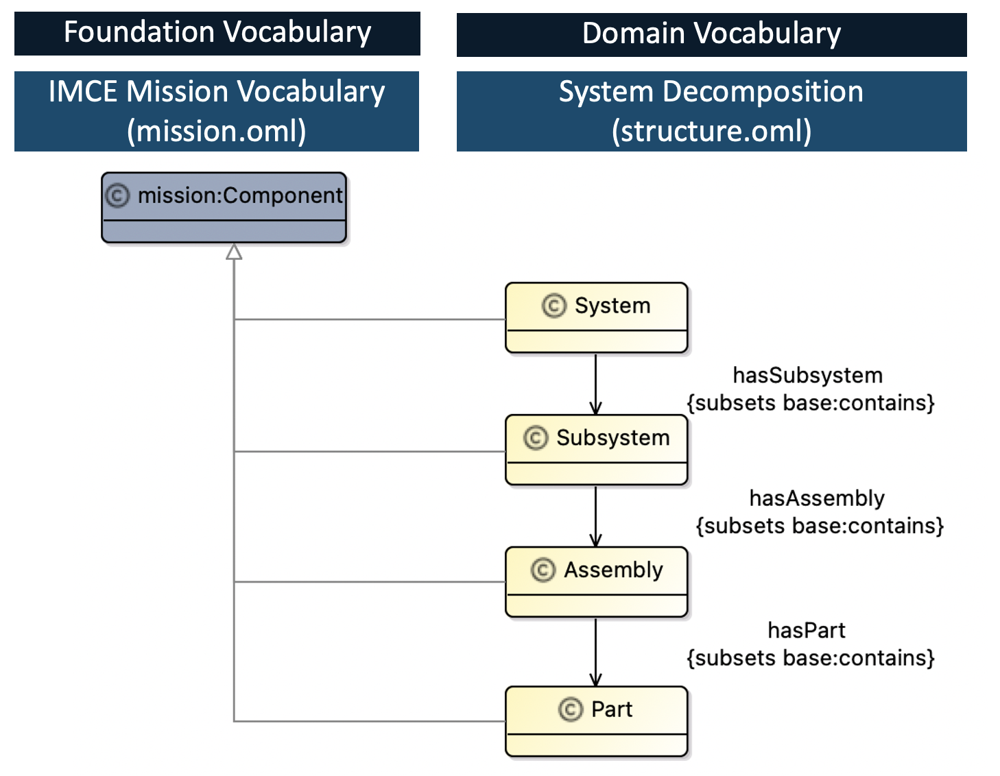
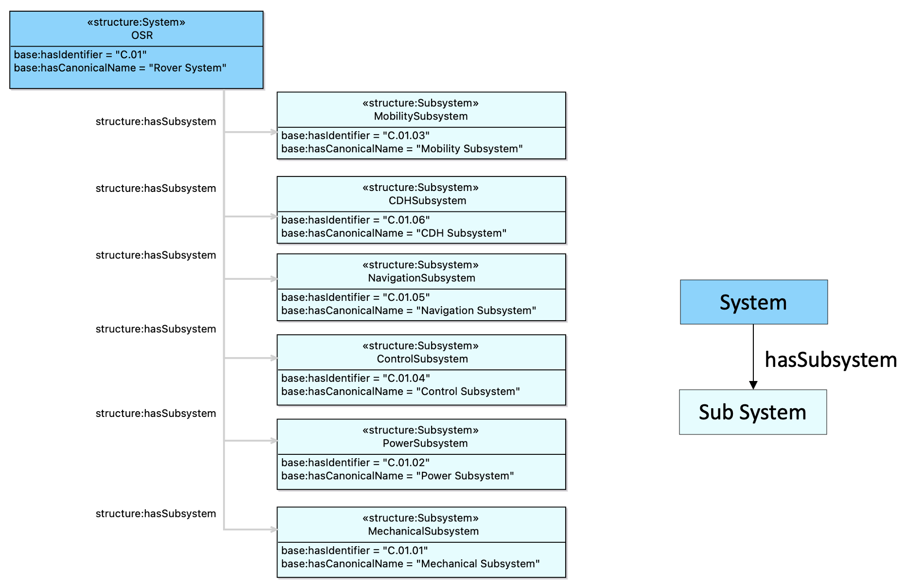

source("../../osr_common.R")1 OSR mission:Component
1.1 Summary
We described the OSR system structure using IMCE “mission:Component” vocabularies.
1.2 Vocabulary
We defined the domain specific vocabularies to describe the OSR system decomposition. We defined “System”, “Subsystem” and “Assembly” concepts as a specialization of a mission:Component as shown in Figure 1.1.

1.3 Descriptions

1.4 Analysis
We analyze the hierarchical structure of the mission:Component.
1.4.1 SPARQL Query for “Component contains Component”
PREFIX base: <http://imce.jpl.nasa.gov/foundation/base#>
PREFIX mission: <http://imce.jpl.nasa.gov/foundation/mission#>
PREFIX structure: <http://opencaesar.io/open-source-rover/vocabulary/structure#>
PREFIX rdfs: <http://www.w3.org/2000/01/rdf-schema#>
SELECT DISTINCT ?c1_localname ?c1_id ?c1_name ?c1_type ?c2_localname ?c2_id ?c2_name
WHERE {
?c1 a mission:Component ;
base:hasIdentifier ?c1_id ;
base:hasCanonicalName ?c1_name ;
OPTIONAL{
?c1 base:isContainedIn ?c2 ;
OPTIONAL{
?c2 base:hasIdentifier ?c2_id ;
base:hasCanonicalName ?c2_name .
}
}
# Extract the local name
BIND(STRAFTER(STR(?c1), "#") AS ?c1_localname) .
BIND(STRAFTER(STR(?c2), "#") AS ?c2_localname) .
OPTIONAL {
?c1 a structure:System ;
BIND("System" AS ?c1_type) .
}
OPTIONAL {
?c1 a structure:Subsystem ;
BIND("Subsystem" AS ?c1_type) .
}
}
ORDER BY ?c1_id1.4.2 Read JSON file of Query Results
omlrepo <- "../../../../open-source-rover/"
# output dir for owlQuery specified at resultPath in build.gradle
repo <- paste0(omlrepo, "build/results/")
file <- "component.json"
filepath <- paste0(repo,file)
df <- readQueryResultsFromJson(filepath)
df <- df %>%
filter(c1_type %in% c("System","Subsystem"))datatable(df)1.5 Visualize
Now we visualize data as a tree structure.
# Specify data as a form of parent and child
df_vis <- df %>%
mutate(owner = paste(c2_id, c2_name),
name = paste(c1_id, c1_name)) %>%
select(owner,name,c1_type)
# NA for root in the first column
df_vis$owner[1] <- c(NA)
# This tooltip is shown when hovering on a node of a tree diagram
df_vis$tooltip <- paste0(
"type: ",
df_vis$type,
"<br>name: ",
df_vis$name
)
# Using reusable function to produce interactive tree diagrams
plotCollapsibleTreeFromDataframe(df_vis, palette="BluYl",
parent = "owner", child = "name", types = "c1_type",
tooltips = "tooltip")